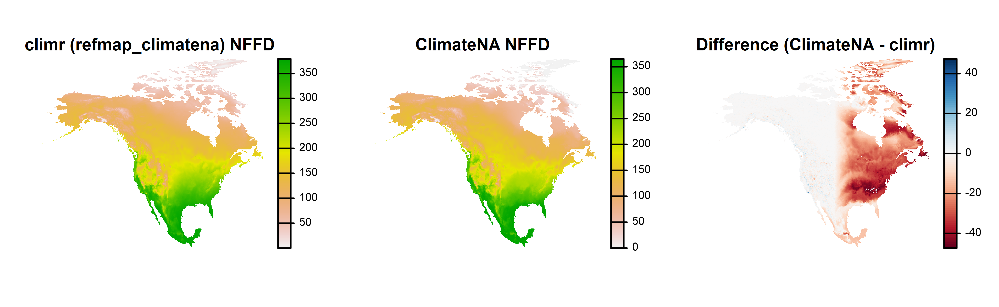
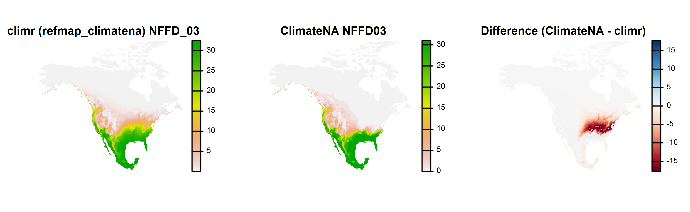
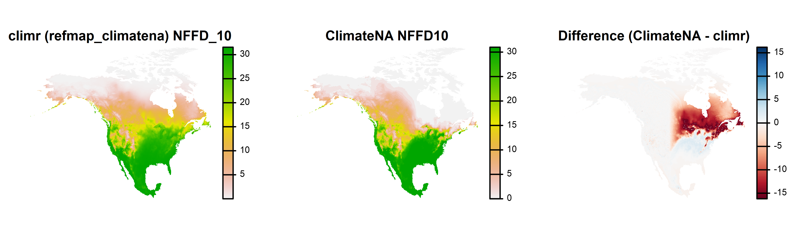
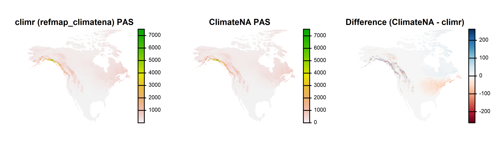
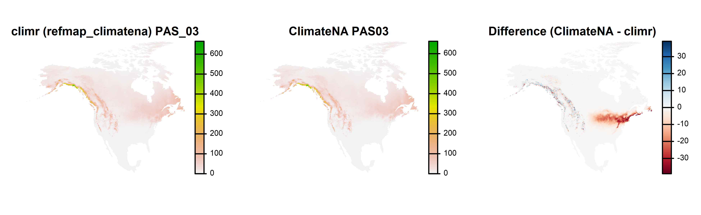
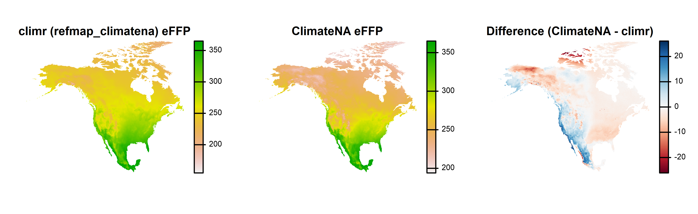
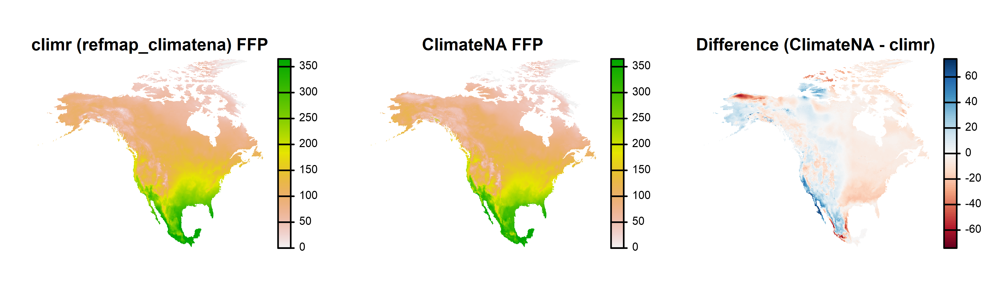
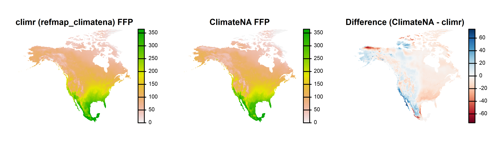
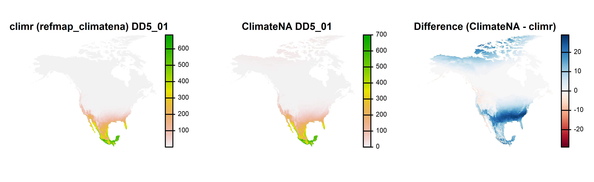

Discrepancies with ClimateNA
knownIssues_DiscrepanciesWithClimateNA.Rmdclimr currently uses the ClimateNA derived variable
equations (Wang et al.
2016). In theory, we should get similar results from both
packages when we use the refmap_climatena as the
downscaling basemaps for climr. However, there are unexplained
discrepances in some variables.
NFFD and PAS
We have obtained updated parameters for number of frost free days
(NFFD) and precipitation-as-snow (PAS) from the ClimateNA developers.
However, there are still discrepancies between climr
results using refmap_climatena and results from the ClimateNA
product.
Annual NFFD has discrepancies across eastern North America.

Monthly NFFD is confined to latitudinal bands within eastern North America. Note that ClimateNA has a very sharp monthly NFFD gradient in Eastern North America.

The pattern is similar for PAS. Differences in western North America
are likely due our choice to disable elevation adjustment for
precipitation in climr

It is likely that ClimateNA is using different parameters in eastern
North America. We have chosen not to pursue this issue because we are
planning to develop new derived variable equations for
climr within the next year.
Frost-free period (FFP) variables
climr and ClimateNA have substantial discrepancies in the end day of the frost-free period (eFFP), commonly on the order of 10 days, though both have credible gradients at the continental scale. Since there are no discrepancies in monthly mean minimum temperatures, these discrepancies must be due to differences in the derived variable equation parameters. However, we have not pursued this issue.
 

Growing degree-days (DD5)
ClimateNA has positive values of DD5 in the high arctic in the winter months, which does not seem credible. For example, ClimateNA indicates DD5 up to 20 growing degree days in January. Since the climr values are more credible, we have not pursued this issue. However, apparently climr and ClimateNA are using different parameters for degree-day variables.
